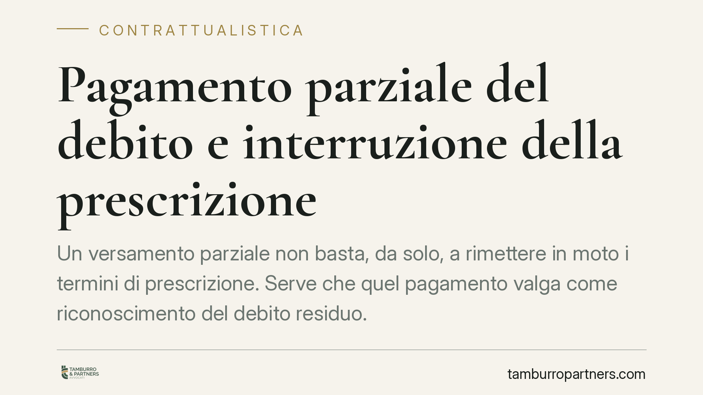

Pagamento parziale del debito e interruzione della prescrizione
Un versamento parziale non basta, da solo, a rimettere in moto i termini di prescrizione. Serve che quel pagamento valga come riconoscimento del debito residuo. La giurisprudenza recente chiarisce quando l'acconto interrompe la prescrizione e quando invece resta neutro. Un dettaglio che pesa: la causale con cui si paga può fare la differenza tra un credito ancora esigibile e un credito ormai perso.

Il fatto
Quando un debitore versa una somma inferiore a quanto dovuto, il creditore tende a considerare quel pagamento come un implicito riconoscimento dell'intero debito. Da lì, secondo questa lettura, la prescrizione ripartirebbe da capo.
La realtà è più articolata. Diversi Tribunali (tra cui Salerno, Taranto, Potenza e Frosinone), in linea con la Corte di Cassazione, hanno precisato che il pagamento parziale interrompe la prescrizione solo se, per come è avvenuto, esprime la volontà del debitore di riconoscere il debito nella sua interezza.
Inquadramento normativo
Il riferimento è l'art. 2944 del codice civile: "La prescrizione è interrotta dal riconoscimento del diritto da parte di colui contro il quale il diritto stesso può essere fatto valere".
La norma non richiede formule sacramentali. Il riconoscimento può essere anche tacito, cioè desumibile da comportamenti concludenti. Il punto è che quel comportamento deve manifestare, in modo inequivoco, la consapevolezza del debito e la volontà di ammetterne l'esistenza.
Qui sta la questione. Un pagamento parziale non è automaticamente un riconoscimento del debito residuo. Può essere letto in due modi opposti: come ammissione dell'intero debito (di cui si salda una parte), oppure come tacitazione di una pretesa che il debitore ritiene limitata proprio a quella somma. Se il versamento avviene, ad esempio, a saldo e stralcio o come definizione di una contestazione, non c'è alcun riconoscimento del residuo.
È per questo che la causale assume rilievo decisivo. Un pagamento indicato espressamente come "in acconto" segnala che il debitore riconosce un debito maggiore, di cui sta versando solo una frazione. Il termine di prescrizione ricomincia allora a decorrere dalla data del versamento (effetto interruttivo istantaneo dell'art. 2943 c.c.).
Implicazioni pratiche
Le conseguenze cambiano a seconda della posizione.
Per il creditore (una società che fornisce beni, un professionista, un fornitore) il rischio è duplice. Da un lato può illudersi che ogni acconto ricevuto "congeli" la prescrizione, quando invece un pagamento privo di causale chiara potrebbe non produrre alcun effetto interruttivo sul residuo. Dall'altro, se non conserva prova documentale della causale, resta esposto all'eccezione di prescrizione in giudizio.
Per il debitore vale il ragionamento speculare. Chi versa un acconto senza precisare che si tratta di pagamento parziale su un debito più ampio rischia di riattivare, di fatto, i termini di prescrizione a proprio svantaggio. Chi invece intende chiudere la partita deve dichiararlo: pagamento a saldo, a tacitazione di ogni pretesa, con rinuncia del creditore all'eventuale differenza.
Lo stesso principio si estende ai rapporti di lavoro. Il lavoratore che riceve un acconto sulle differenze retributive, o l'azienda che lo eroga, hanno interesse a qualificare correttamente quel versamento, perché da esso dipende la sorte dei crediti ancora contestati.
Cosa fare in concreto
- Indicate sempre la causale del pagamento. Se è un acconto, scrivetelo ("acconto su fattura n. ... / su debito complessivo di euro ..."). Se è a saldo, precisatelo con formula di tacitazione.
- Conservate la prova documentale. Bonifici con causale, quietanze, scambi email che qualifichino il versamento. In caso di contenzioso è ciò che dimostra il riconoscimento (o la sua assenza).
- Verificate i termini prima di agire. Prima di richiedere il residuo, ricostruite quando è maturata la prescrizione e se vi siano stati atti interruttivi validi.
- Formalizzate gli accordi transattivi. Se il pagamento chiude la pretesa, mettetelo per iscritto con rinuncia espressa. Un saldo e stralcio ambiguo genera contenzioso.
- Non affidatevi agli automatismi. "Ha pagato qualcosa, quindi riconosce tutto" è una presunzione che in giudizio va provata, non data per scontata.
In sintesi
Il pagamento parziale interrompe la prescrizione solo quando vale come riconoscimento del debito residuo. La differenza la fa la qualificazione del versamento. Consigliamo di curare la causale e la documentazione fin dal primo pagamento: è il modo più semplice per evitare che un credito, o una difesa, si dissolvano per una formula scritta male.
---
*Contributo informativo a cura di Tamburro & Partners - Avv. Giuseppe Tamburro. Non costituisce parere legale.*
Ogni contratto ha il suo equilibrio.
Se vuoi una revisione delle clausole o una redazione su misura, scrivi allo studio. Ti rispondiamo entro un giorno lavorativo.